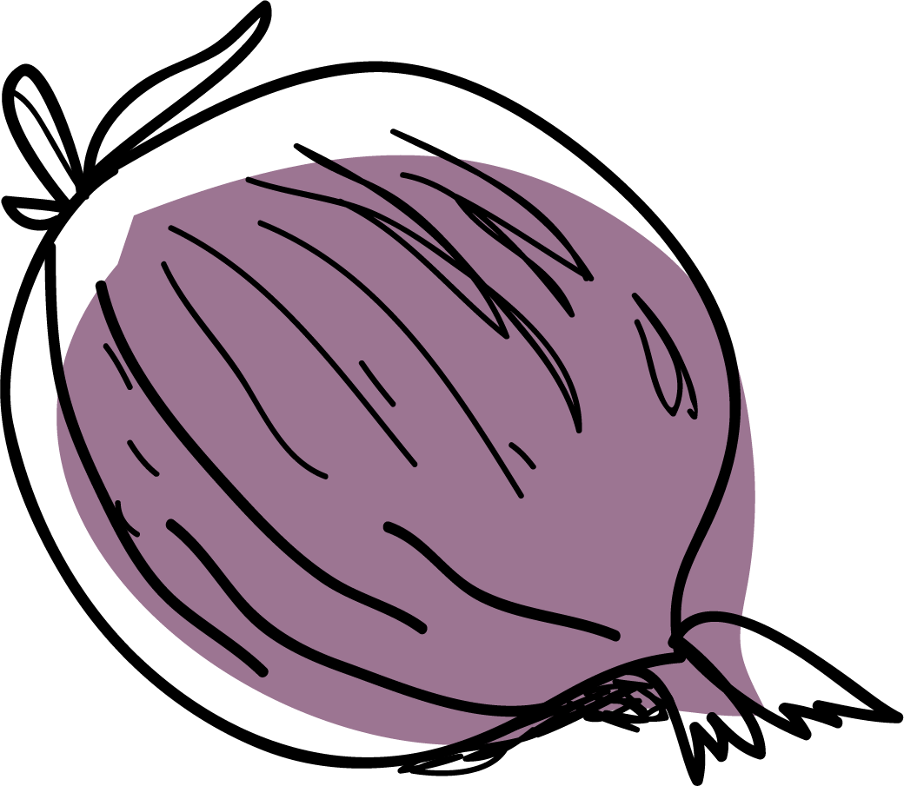

01
Appetizers
Food to eat before other food!
Food recipes, just like software code, require testing. In the culinary world, recipe testers play an essential role in the creation of a cookbook by making sure that what the chef/author describes can be implemented by other people and that the recipes work as described.
The similarities between food and code also work the other way. We call code that is difficult to read spaghetti code. We are encouraged to eat our own code, which means using it ourselves as a way to test it. Code that doesn't work is half-baked. A sample code fragment is called a recipe and collections of coding recipes are known as cookbooks, like The JavaScript Cookbook by Shelly Powers and The C# Cookbook by Jay Hilyard.
Open source software has a particular indebtedness to the food world. As with food recipes, having lots of people review your code only makes it stronger and more reliable. This is the premise of Linus's Law, which promotes the idea that a key benefit of open source over closed source software is that it gets more eyes and is more likely to get seen by those who can find and resolve bugs in the codebase.
In the tradition of open source, the authors of the chapters in this cookbook are giving back to the community by sharing favorite recipes - free, online, and downloadable. Enjoy appetizers, entrees, and desserts from around the world, courtesy of our global developer community!
 Contribute your recipe
Food to eat before other food!

The main event
Sweet treats
Some more stuff